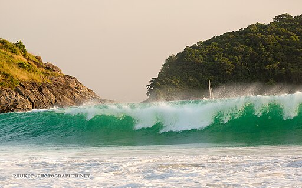

Graphics
Include 1 image using an IMG tag. Create a Favion and link to it using a link tag. Answer the following questions on your page: What kind of photos are good to encode using JPEG? Most photos except logos which can become blurry due to compression. What kind of photos are good to encode using GIF? animated images with simple graphics and colors, not good for wide range of color. What is unique about the PNG format? png is lossless making it so that is great for high detail and transperancy but it will take a while to load. How do you resize your photo to the size it should be displayed? use photo editing software, adjust height and width while maintaining aspect ratio. Why should you resize photos using photo editing software instead of resizing it using CSS? It loads faster ad=nd won't lose quality